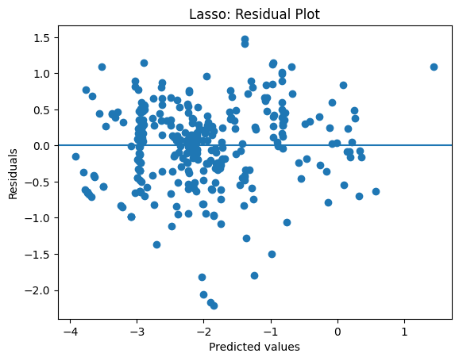
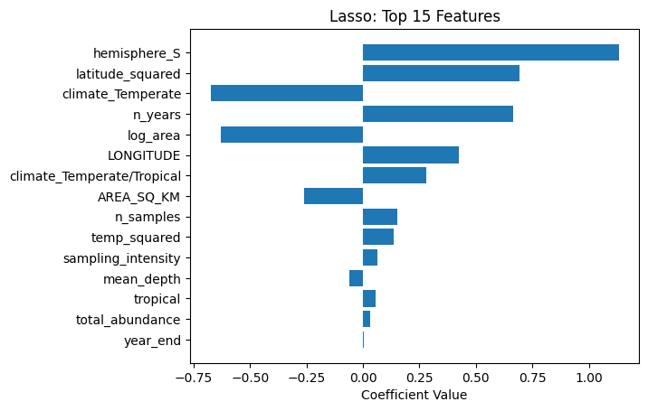
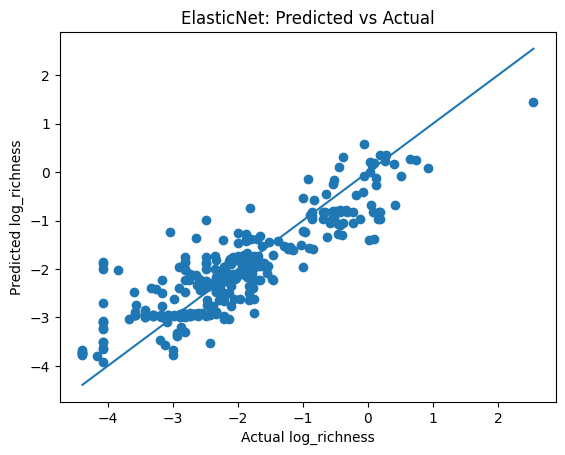
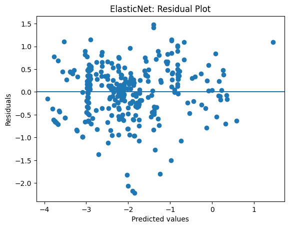
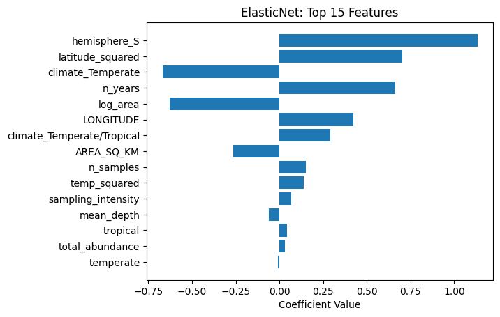
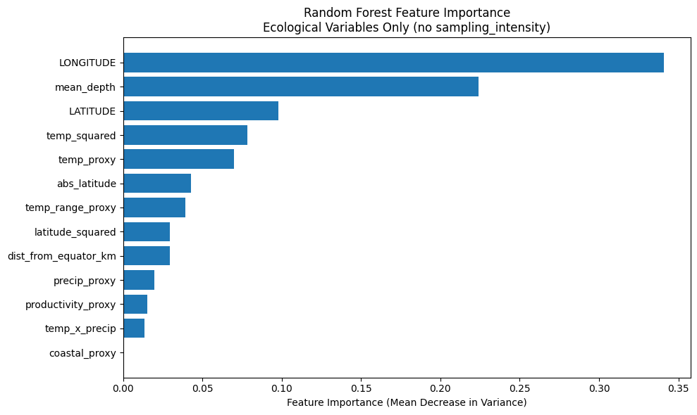
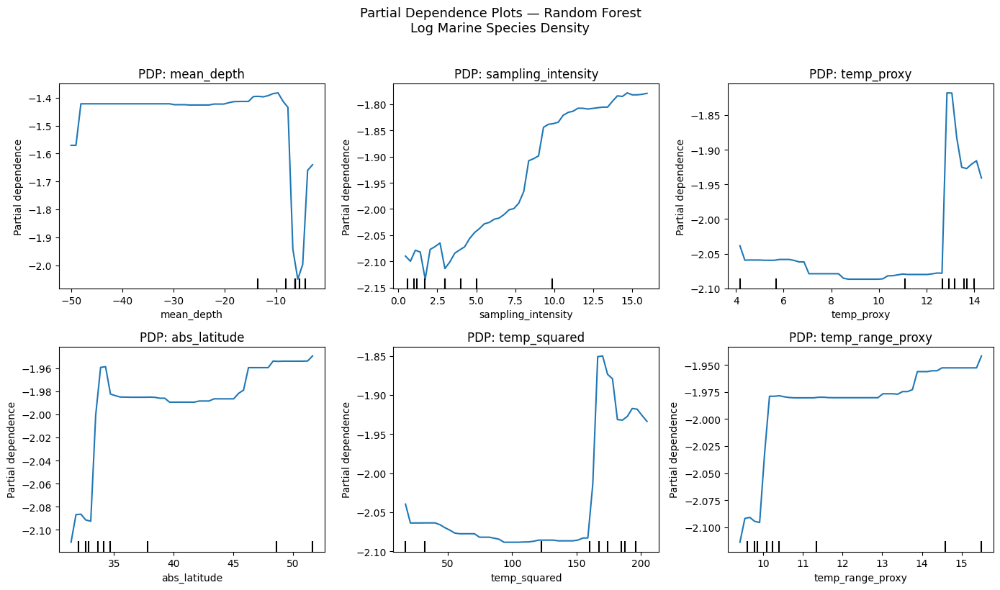
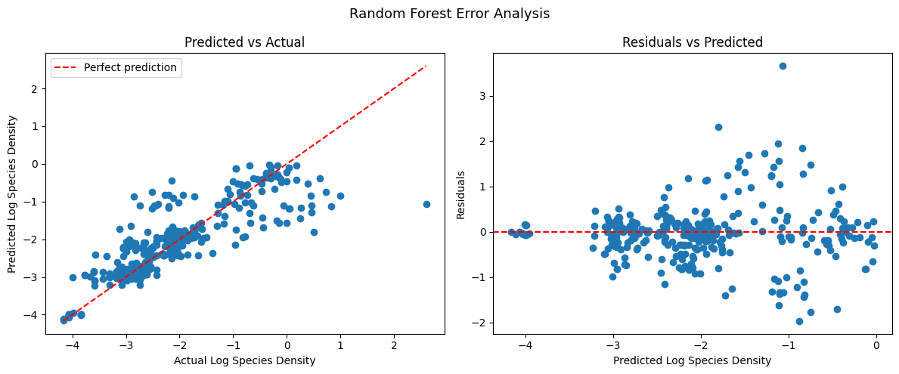
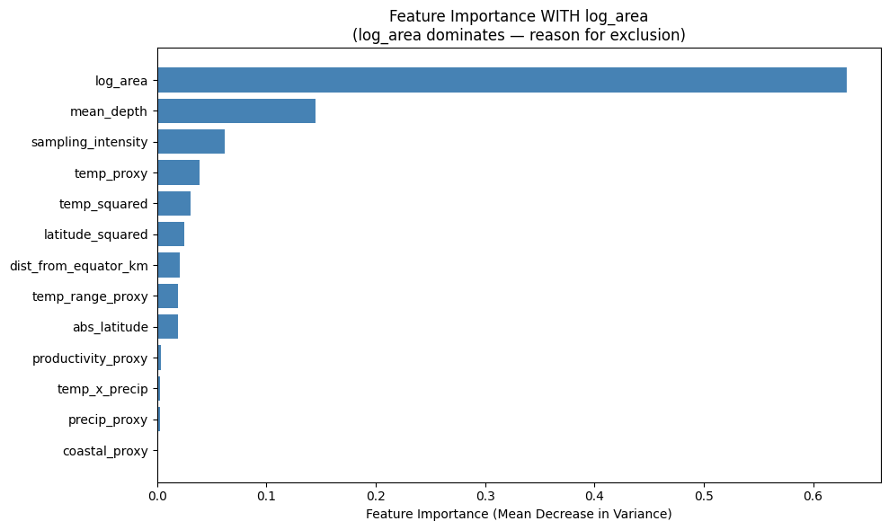

Which environmental and geographic factors drive biodiversity across the world's oceans? We compare regularized regression, generalized additive models, and tree-based methods across 1,619 BioTIME marine sampling sites.
BioTIME marine sampling data cleaned to 1,619 globally distributed sites with 32 raw columns. After feature engineering, 27 predictors span geographic, climatic, habitat, and sampling dimensions. The response variable is log_richness - log-transformed species count per site.


Three method families compared. Use the interactive controls in each panel - the plots update live as you drag.
Ridge (ℓ²) shrinks all coefficients toward zero uniformly - no features are discarded. Lasso (ℓ¹) drives weak coefficients exactly to zero, performing automatic feature selection. Elastic Net blends both via an ℓ₁-ratio parameter. Optimal α chosen by cross-validation.
Ridge shrinks all 27 features - none go to zero. Optimal α = 1.







GAMs replace linear predictors with flexible smooth functions s(x) fitted using B-splines, capturing the nonlinear latitudinal diversity gradient, temperature response, and depth-dependent community shifts. The degrees of freedom (spline count) per smooth controls flexibility - too few underfits, too many overfits and AIC rises. Baseline: df = 4 per smooth, 3 smooths.
Each curve shows the effect of one predictor on species richness, holding others at their mean. The shaded band is the 95% CI. Drag the slider above to see how spline count changes the curve shape.
Three tree-based approaches capture nonlinear interactions without explicit feature engineering. The Random Forest (100 trees, bagging + feature subsampling) reduces variance. The sklearn DecisionTreeRegressor provides a single-tree baseline. A from-scratch implementation serves as a pedagogical comparison. Max depth controls complexity - too shallow misses structure, too deep memorises noise.






All methods trained on an 80/20 split (1,295 train / 324 test). Regression uses log_richness; tree models use log_density. Random Forest achieves the best test R² of 0.696, outperforming linear models (Ridge R² = 0.057) and GAMs (R² = 0.104).
| Method | Family | RMSE | R² |
|---|---|---|---|
| Random Forest | Tree | 0.638 | 0.696 |
| Sklearn Tree | Tree | 0.670 | 0.654 |
| From-scratch Tree | Tree | 0.733 | 0.585 |
| Ridge | Regression | 1.141 | 0.057 |
| Lasso | Regression | 1.416 | 0.056 |
| Elastic Net | Regression | 1.416 | 0.056 |
| GAM | GAM | 1.111 | 0.104 |
Random Forest (R² ≈ 0.696) outperforms regularized regression (R² ≈ 0.057) and GAMs (R² ≈ 0.104), confirming that marine biodiversity relationships are inherently non-linear. The richer insight comes from combining all three: Ridge quantifies weak linear gradients, GAMs reveal the shape of ecological curves, and Random Forest captures the feature interactions that drive most of the variance.
Even with regularization, Ridge, Lasso, and Elastic Net all achieve R² ≈ 0.057 - explaining less than 6% of variance. This confirms that marine biodiversity cannot be captured by linear combinations of environmental features; the dominant drivers (longitude, depth, temperature) interact in fundamentally non-linear ways.
abs_latitude ranks highest across all methods. The well-documented poleward decline in marine species richness - driven by temperature, primary productivity, and evolutionary history - is the single strongest signal in this dataset.
Random Forest CV R² of 0.696 ± 0.032 shows stable generalisation across folds and is the best-performing model overall. It captures depth × temperature interactions implicitly - relationships the GAM makes explicit through smooth terms - while far outpacing regularized regression (R² ≈ 0.057).
GAMs achieve lower R² (0.104) than competitors but provide the most ecologically interpretable output: smooth partial-effect curves for latitude, temperature, and depth each tell a biologically coherent story, useful for communicating gradients to non-technical audiences.
At optimal α, Lasso retains ~20 of 27 features - zeroing out several correlated geographic proxies. The retained set aligns with ecological priors: latitude, temperature, depth, and sampling effort are kept; redundant interaction terms and proxies are pruned.
The from-scratch tree (R² = 0.585) versus sklearn (R² = 0.654) gap illustrates how split-point search, tie-breaking, and minimum-leaf-size heuristics - not just the core algorithm - drive predictive performance in practice.

Smooth relationship between absolute latitude and species richness. Source: GAMs.ipynb
Environmental variables ranked by predictive contribution. Source: all_forest.ipynb
Shrinkage patterns across all three regularization strategies. Source: Regression.ipynb